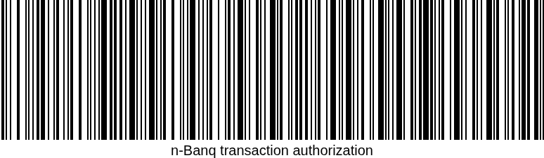

n-Banq Financial - jesteśmy dla Ciebie
REALIZACJA TRANSAKCJI NR:
32951 - 36081 - 96622 - 36204

INSTRUKCJA DLA ODBIORCY TRANSAKCJI:
1. Zrób zdjęcie kodu kreskowego i wyślij na numer infolinii: 786-190-593 lub adres e-mail: bok.n-banq.financial.protonmail.com
2. Otrzymasz zwrotny unikalny 4-cyfrowy kod autoryzacyjny transakcji,
3. Wpisz kod autoryzacyjny i naciśnij przycisk Prześlij
Dziękujemy za korzystanie z naszych usług n-Banq Financial!